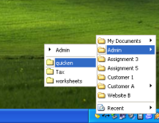

How does Folder View work?
Most computer users use one main location where they store most of
their files: My Documents. Often, My Documents contains many
sub-folders containing other sub-folders. This structure makes it quite
a hassle to get to the right location when opening or saving files. But
that's not all: most of the time, one or two often used folders are for
technical reasons not located inside My Documents, but somewhere else.
A network location with
global company files, an
MP3-folder on a different harddisk, or a removable drive. Reaching all
these different folders takes a lot of time.
But not with Folder
View. Because Folder View enhances Windows and the Windows file
Explorer in four ways:
|
Toolbar |
Applications |
||
|
Quick Copy/Move |
Tray Menu |
 |
Recent Menu
And the bonus is: the recent folders menu. The toolbar and the three
menus all contain a special 'Recent Menu', which remembers your most
recently used folders. This menu makes it for example very easy to
reopen a folder you accidentally closed. Or to save a file inside
the last folder you opened. Or to move a file to the last
folder you accessed. Very quickly.